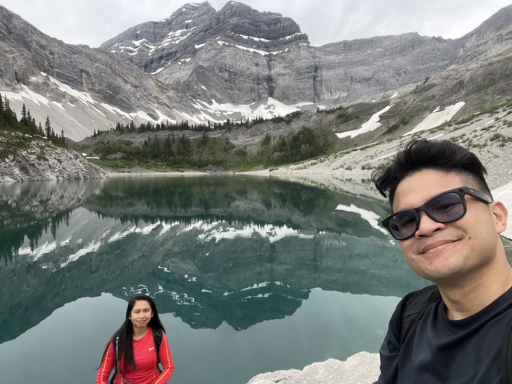
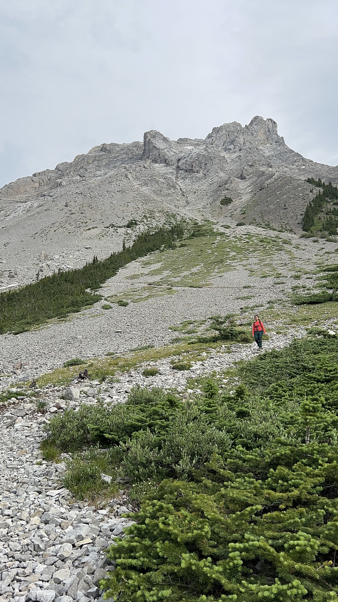
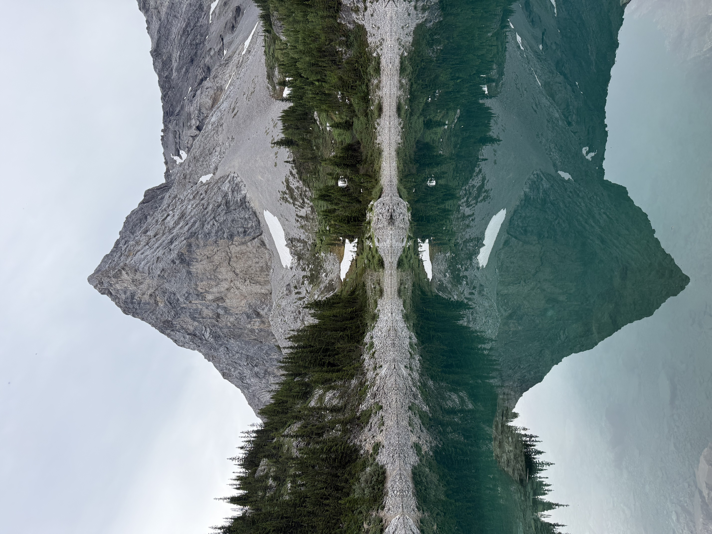
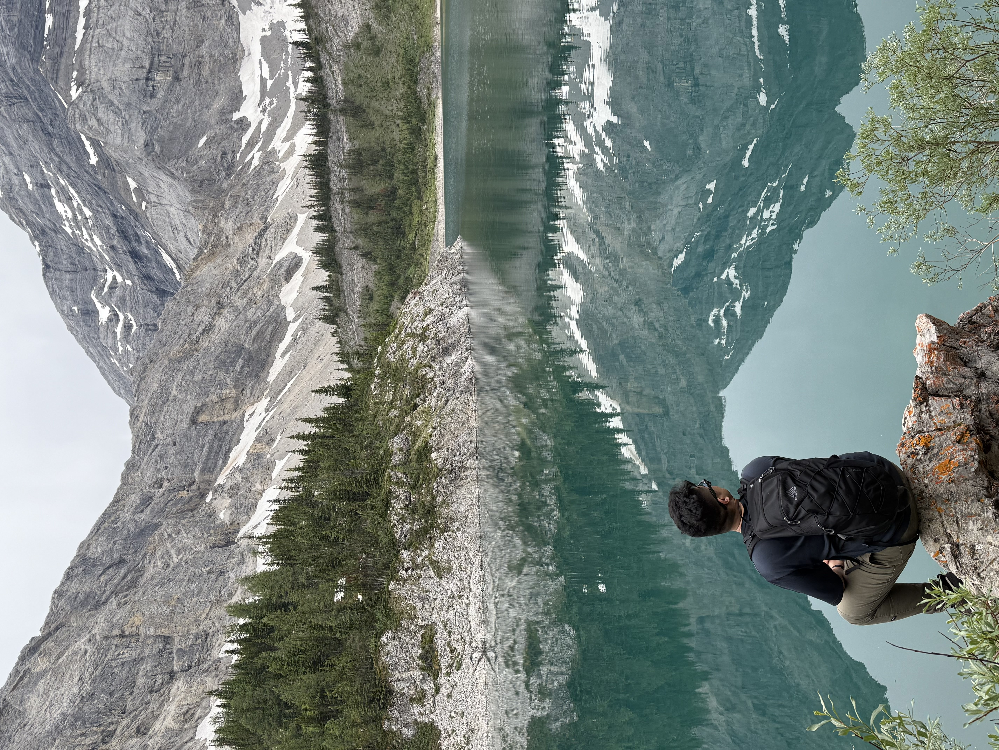
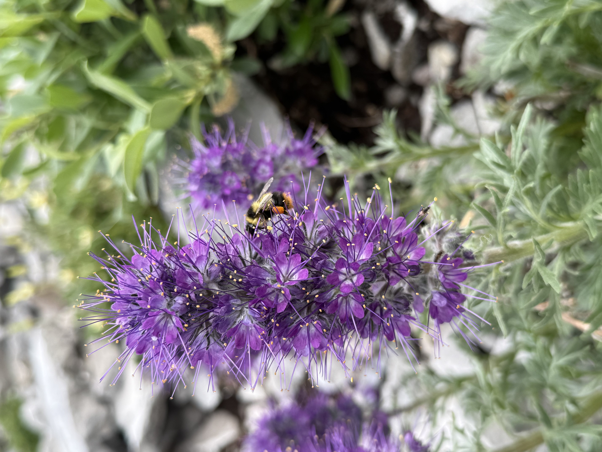
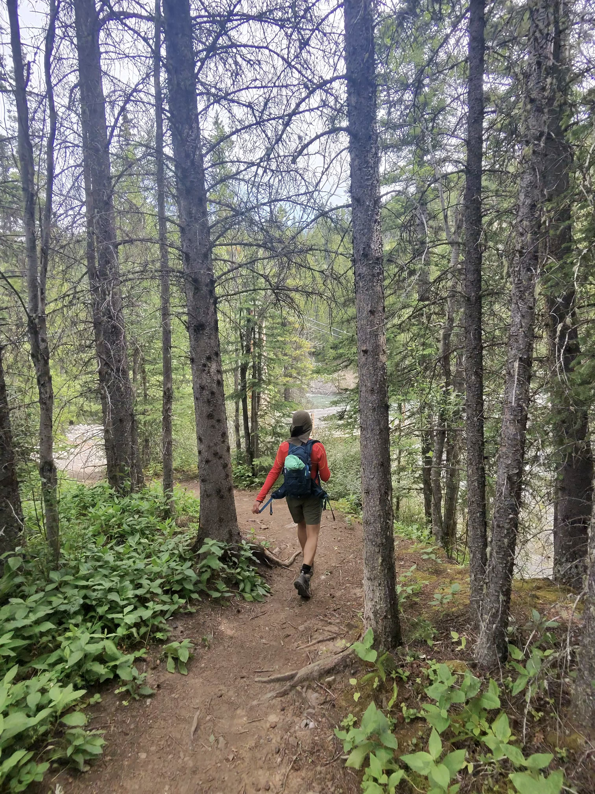
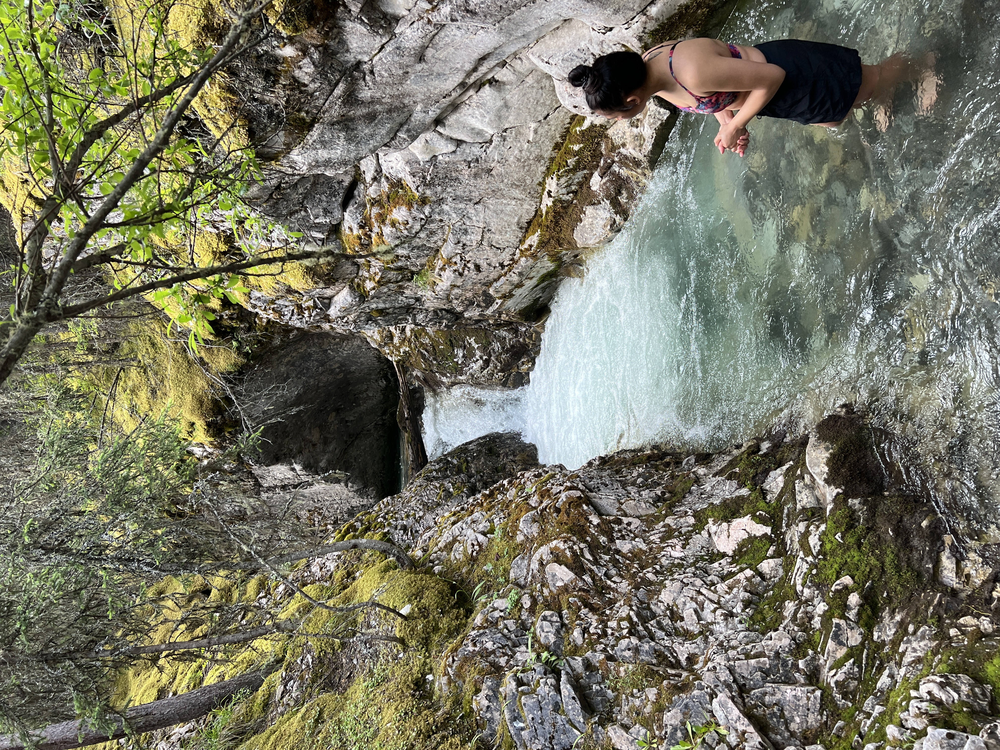
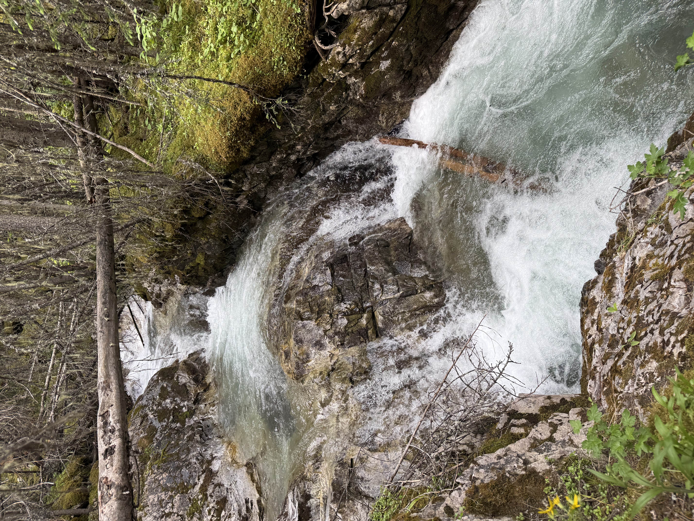
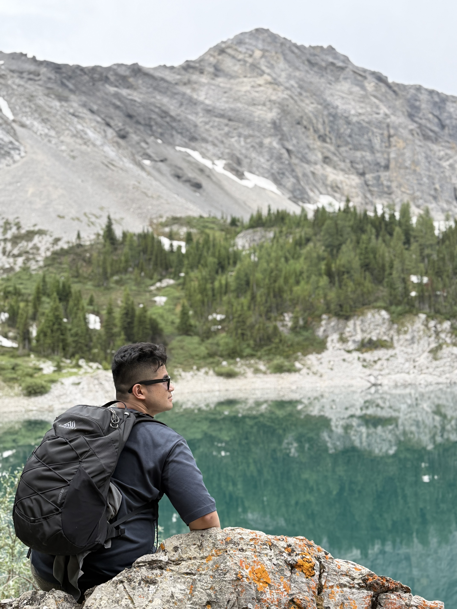

Jul 17 2026 — Spontaneous Galatea Lakes Hike
Our Unplanned Mountain Date
Sometimes the best adventures are the ones you don't overthink! We honestly weren't sure which hike we were doing today, so picking the Galatea Lakes trail was a totally last-minute decision. We headed out just wanting to explore and see where the day took us.
Because we were moving at our own pace, we actually crushed this one pretty quickly! The best part of our spontaneous choice was how quiet the trail was. We saw very few people along the way, making it feel like our own private little escape into the mountains. It ended up being such a quick, sweet trip filled with gorgeous glassy lakes, quiet forests, and rushing waterfalls.

Galatea Memories







